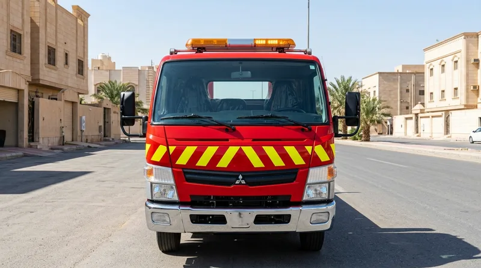
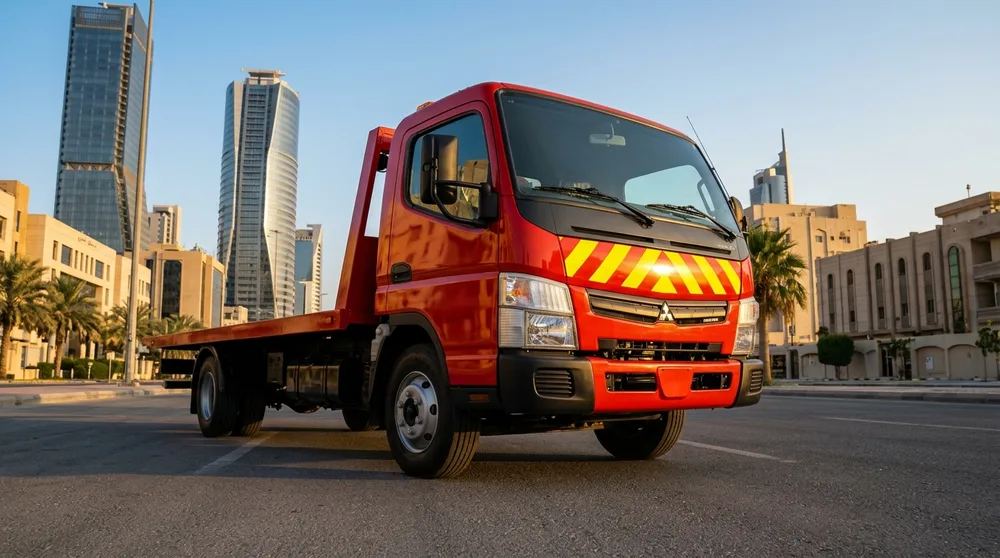
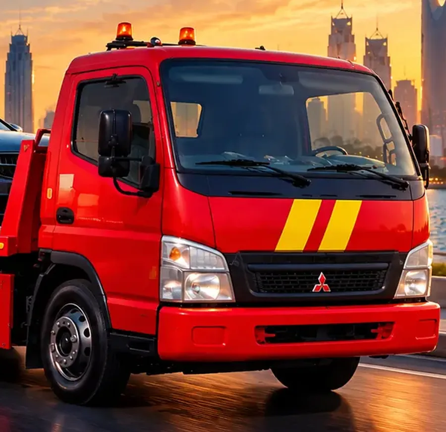

سطحة هيدروليك
للسيارات المعطلة أو المتضررة أو التي لا تتحرك. تُرفع على المنصة كاملة ولا تلمس عجلاتها الأرض.
سطحة هيدروليك تصلك في الدمام والخبر والظهران والقطيف. نرفع سيارتك ونثبتها ونوصلها إلى وجهتها دون خدش.

عند تعطل السيارة أو الحاجة إلى نقلها، نساعدك على ترتيب سطحة مناسبة من موقعك إلى الورشة أو الوجهة التي تختارها. نخدم الدمام والخبر والظهران والقطيف والجبيل، كما نوفر النقل بين الدمام والرياض بعد تأكيد تفاصيل الرحلة. اذكر نوع السيارة وموقعها وحالتها عند الاتصال حتى نحدد التجهيز والوقت والتكلفة قبل التحرك. سواء كنت تبحث عن رقم سطحة الدمام أو سطحة قريبة مني، اتصل على 0508432801 أو أرسل موقعك عبر واتساب لبدء التنسيق. أخبرنا إن كانت المركبة تعمل، أو كان الوصول إليها صعبًا، وشارك اسم الحي وأقرب معلم. تساعدنا هذه المعلومات على شرح خيارات التحميل والتسليم وتوضيح ما يلزم قبل وصول السائق.
نصلك أينما كنت
كل ما تحتاجه سيارتك عندما تتعطل أو تحتاج إلى نقل.
للسيارات المعطلة أو المتضررة أو التي لا تتحرك. تُرفع على المنصة كاملة ولا تلمس عجلاتها الأرض.
وصول سريع داخل المدينتين وإلى الظهران والقطيف.
نقل السيارات بين المدن بسعر واضح قبل التحرك.
تثبيت بأحزمة مخصصة وتحميل بطيء يحمي الجسم والإطارات.
سحب السيارة العالقة والعودة بها إلى الطريق.
من البيت إلى الورشة أو من المعرض إلى المشتري.
تنسيق استلام وتسليم من موقعك إلى الوجهة التي تحددها داخل المدينة.




اتصال واحد أو موقع على واتساب يكفي.
نخبرك بالسعر أولًا، ولا مفاجآت عند التسليم.
منصة هيدروليك وأحزمة تثبيت وإضاءة تحذير للطريق.
ليلًا ونهارًا وفي العطل الرسمية.
أو أرسل لنا موقعك على واتساب.
تعرف التكلفة ووقت الوصول قبل أن نتحرك.
تحميل وتثبيت بأحزمة على المنصة.
ورشة، منزل، أو مدينة أخرى.
تعتمد وسيلة النقل على حالة المركبة ومكان توقفها. إذا كانت السيارة لا تعمل أو لا يمكن قيادتها بأمان، اذكر ذلك بوضوح عند الاتصال حتى نناقش تجهيز التحميل الملائم. سطحة هيدروليك الدمام مناسبة لنقل المركبة كاملة على المنصة عند توافق ظروف الموقع والسيارة، بينما تتطلب بعض الحالات الخاصة تفاصيل إضافية قبل تحديد الطريقة. وضّح إن كانت العجلات مقفلة أو يوجد تلف ظاهر، ولا تحاول تحريك سيارة متضررة إذا كان ذلك قد يزيد الضرر أو يعرّضك للخطر.
تختلف المدة حسب الحي، وحركة الطريق، وبعد نقطة الانطلاق، كما تختلف التكلفة باختلاف المسافة ونوع السيارة وصعوبة الوصول إليها والوجهة. لهذا نطلب موقعًا دقيقًا ووصفًا مختصرًا للحالة قبل تأكيد التفاصيل. خدمة سطحة 24 ساعة تعني إمكانية التواصل ليلًا ونهارًا، لكن زمن الوصول الفعلي يتوقف على موقعك والظروف وقت الطلب؛ لا نعطي وعدًا بوقت ثابت من دون معرفة هذه المعلومات. اتفق على السعر والوجهة قبل بدء الرحلة.
إذا تعطلت المركبة على الطريق، شغّل أضواء التحذير وانتقل إلى مكان آمن بعيدًا عن حركة المرور متى أمكن. لا تقف خلف السيارة أو تحاول إصلاحها في مسار السير. شارك موقعك عبر واتساب واذكر اتجاه السير وأقرب معلم، ثم انتظر في منطقة آمنة. عند البحث عن ونش سيارات الدمام أو نقل سيارات الدمام، يساعد وصف المشكلة ومكان المركبة على ترتيب الاستجابة. بعد التحميل، راجع وجهة التسليم وتأكد من أخذ الأغراض الشخصية والمفاتيح والمستندات المهمة.
نخدم طلبات سطحة الدمام الخبر، وننسق كذلك رحلات سطحة الرياض الدمام حسب التفاصيل والتوفر. تواصل معنا على 0508432801 لمعرفة الخيارات المتاحة.
نغطي المنطقة الشرقية وننقل بين المدن:
نتحرك فور اتصالك، ويعتمد الوقت على موقعك وحركة الطريق. أرسل موقعك على واتساب لنحدده بدقة.
نعم، طوال أيام الأسبوع وعلى مدار الساعة.
نعم، وبقية المدن أيضًا. اتصل لمعرفة السعر والموعد.
نعم، تُرفع على سطحة هيدروليك وتُثبَّت بأحزمة مخصصة دون سحبها على عجلاتها.